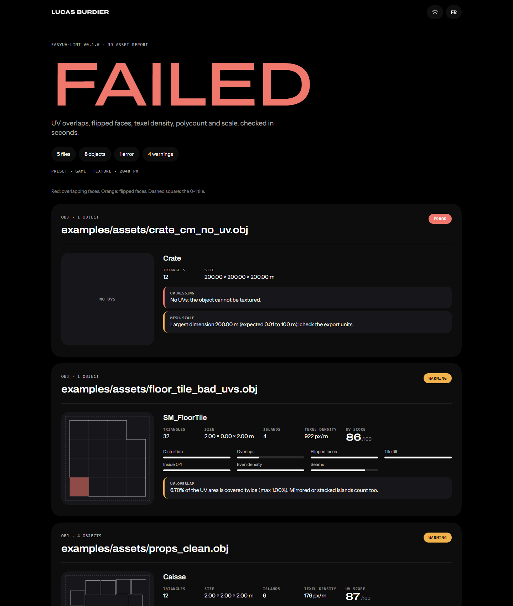

Catch broken 3D assets before they reach your game.Repère les assets 3D cassés avant qu'ils n'arrivent dans ton jeu.
Open source · CLI · GitHub ActionOpen source · Ligne de commande · GitHub Action
Powered by the EasyUV enginePropulsé par le moteur EasyUV
EasyUV
Lint
UV overlaps, flipped faces, texel density, polycount, scale and naming, checked on your machine or on every pull request. OBJ, glTF, GLB and FBX.Chevauchements d'UV, faces retournées, densité de texels, polygones, échelle et noms, vérifiés sur ta machine ou à chaque pull request. OBJ, glTF, GLB et FBX.

01 · What it checks01 · Ce qu'il vérifie
14 rules14 règles
Exact measurements from the EasyUV engine, not a low-resolution estimate. Every rule can be tuned or turned off.Des mesures exactes issues du moteur EasyUV, pas une estimation basse résolution. Chaque règle se règle ou se désactive.
uv.missingMissing UVsUV manquantes
The object cannot be textured.L'objet ne peut pas être texturé.
errorerreuruv.overlapUV overlapsChevauchements d'UV
UV area covered twice, shown in red in the report.Surface UV couverte deux fois, en rouge dans le rapport.
max 1 %uv.flippedFlipped facesFaces retournées
Faces mirrored relative to their island.Faces en miroir par rapport à leur îlot.
max 0uv.outsideOutside the tileHors de la tuile
UVs outside 0-1. Turn off for UDIMs.UV hors de 0-1. À désactiver pour les UDIM.
max 1 %uv.distortionDistortionDistorsion
Stretched angles and areas.Angles et aires étirés.
max 0.15uv.density_spreadEven texel densityDensité de texels égale
Density that changes between islands.Densité qui change d'un îlot à l'autre.
max 30 %uv.densityTexel density rangePlage de densité
px/m for your texture size.px/m pour ta taille de texture.
min · maxuv.scoreUV scoreScore UV
Overall EasyUV score out of 100.Score EasyUV global sur 100.
min 60mesh.trisTriangle budgetBudget de triangles
Per object, set by the preset.Par objet, selon le préréglage.
max 100,000mesh.degenerateDegenerate facesFaces dégénérées
Collapsed or zero-area faces.Faces écrasées ou d'aire nulle.
max 0mesh.nonmanifoldNon-manifold edgesArêtes non-manifold
Edges shared by more than two faces.Arêtes partagées par plus de deux faces.
max 0mesh.scaleScaleÉchelle
Catches a crate exported in centimetres.Repère une caisse exportée en centimètres.
0.01 → 100 mmesh.ngonsN-gonsN-gones
Faces with more than four sides.Faces de plus de quatre côtés.
offname.patternNamingNommage
Names that break your convention.Noms qui ne respectent pas ta convention.
regex02 · Quick start02 · Démarrage rapide
Three ways
to use itTrois façons
de l'utiliser
GitHub Action
Annotations on the faulty files, a job summary and the HTML report as an artifact.Annotations sur les fichiers fautifs, résumé du job et rapport HTML en artefact.
# .github/workflows/assets.yml
on: [push, pull_request]
jobs:
lint:
runs-on: ubuntu-latest
steps:
- uses: actions/checkout@v4
- uses: lburdier/easyuv-lint@v0
with:
paths: Assets/Models
preset: gameCommand lineLigne de commande
One binary for Windows, Linux and macOS.Un seul exécutable pour Windows, Linux et macOS.
easyuv-lint Assets/Models easyuv-lint hero.fbx --preset mobile easyuv-lint . --html report.html easyuv-lint . --format json easyuv-lint . --lang fr
Your own rulesTes propres règles
An easyuv-lint.toml at the root of the repository.Un easyuv-lint.toml à la racine du dépôt.
preset = "game"
texture_size = 2048
ignore = ["ThirdParty/"]
[rules]
"uv.overlap" = { level = "error", max = 0.5 }
"uv.density" = { min = 512, max = 1024 }
"mesh.tris" = { max = 25000 }03 · Presets03 · Préréglages
One budget
per targetUn budget
par cible
| Preset | TrianglesTriangles | AlsoEn plus |
|---|---|---|
game | 100,000100 000 | The defaultsLes valeurs par défaut |
mobile | 15,00015 000 | Texel density 256 to 1024 px/m, n-gons warnedDensité de 256 à 1024 px/m, n-gones signalés |
web | 50,00050 000 | three.js and other glTF viewersthree.js et les autres visionneuses glTF |
film | No limitSans limite | More tolerant on distortion and scorePlus tolérant sur la distorsion et le score |
04 · Why easyuv-lint04 · Pourquoi easyuv-lint
Built for
pipelinesPensé pour
les pipelines
ExactExact
The same metrics EasyUV uses to unwrap: distortion, overlaps, flips, density.Les mêmes mesures qu'EasyUV utilise pour déplier : distorsion, chevauchements, faces retournées, densité.
Every formatTous les formats
OBJ, glTF, GLB and FBX, with the UVs already in the file.OBJ, glTF, GLB et FBX, avec les UV déjà présentes dans le fichier.
VisualVisuel
An HTML report with a UV preview of every object, problems in red.Un rapport HTML avec l'aperçu des UV de chaque objet, les problèmes en rouge.
FreeGratuit
Open source under GPL-3.0. Contributions welcome, in English or French.Open source sous GPL-3.0. Contributions bienvenues, en anglais ou en français.